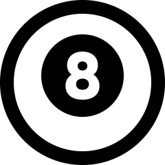

Numer telefonu:
Numer telefonu: Email:
Email:  Data urodzenia: 27.04.1989
Data urodzenia: 27.04.1989 Miejsce zamieszkania: Tarnowo Podgórne
Miejsce zamieszkania: Tarnowo PodgórneO mnie
Jestem łamaczem wszelkich barier i przeciwności. Lubię nowe wyzwania, które dodają ciekawych momentów do mojej codzienności. W życiu zajmowałem się już wieloma dziedzinami od tańca towarzyskiego po zawiłe struktury ruchu lotniczego. Dużo frajdy daje mi na codzień obcowanie ze słowem, które lubię tworzyć i czytać.
Doświadczenie zawodowe
- 2023 - Kurs Frontend Developer - Infoshare Academy
- 2021-2023 - Asystent Notariusza w Kancelarii Notarialnej w Tarnowie Podgórnym
- 2019-2020 - Redaktor - "Nasz Głos - Ostróda"
- 2012-2020 - Kontroler ruchu lotniczego - Polska Agencja Żeglugi Powietrznej
Języki
- Polski - ojczysty
- Angielski - C1
- Niemiecki - A1
Wykształcenie
- 2010-2012 - Kurs na kontrolera ruchu lotniczego - Polska Agencja Żeglugi Powietrznej
- 2008-2010 - Uniwersytet Kardynała Stefana Wyszyńskiego w Warszawie - prawo
- 2005-2008 - III Liceum Ogólnokształcące im. Unii Europejskiej w Ostrołęce - profil matematyczno-fizyczny
Zainteresowania
-
Literatura
Czytanie i pisanie to moje drugie imię. Uwielbiam wymyślać oraz kreować wydarzenia w krótkich, bądź dłuższych formach pisemnych. Piszę od wierszy po książki, a teraz zaczynam pisać też kod :)
- 
Sport
Jestem członkiem kadry narodowej w bilard. Wcześniej byłem wicemistrzem świata w tańcu towarzyskim. Poza tym na codzień uwielbiam oglądać piłkę nożną i koszykówkę, ale pasjonuję się również niszowymi sportami, takimi jak dart czy snooker.
-
Kino
Uwielbiam dobre komedie, a szczególnie te francuskie. Czasami dobrze się też bawię przy kinie akcji, a filmy z Seagal'em należą do moich ulubionych.
-
Lotnictwo
Wszystko co wysoko nabiera zupełnie innego wymiaru. Lotnictwo jest dla mnie jak druga dusza, która zawsze się odzywa, gdy widzę samolot na niebie.